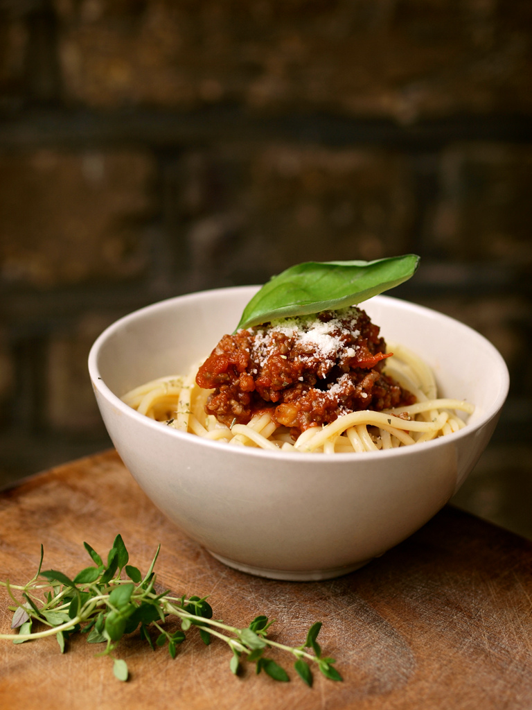

Spaghetti Bolognese

Description
It consists of spaghetti served with a sauce made from tomatoes, minced beef, garlic, wine and herbs; sometimes minced beef can be replaced by other minced meats.
Ingredients
- Spaghetti
- Tomato sauce
- Minced meat
- Garlic cloves
- Onion
Steps
- Cook noodles
- Cut onions and garlic
- Fry onions and garlic in a hot pan
- After 3 minutes, add minced meat
- Add tomato sauce and cook for a few minutes
Back to main page